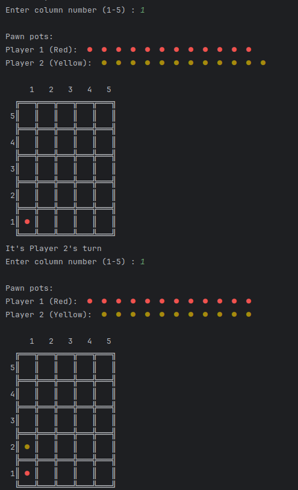

Développement d'une IA pour un jeu de plateau inspiré du Puissance 4.
La figure ci-dessus montre une interface terminale d'un jeu de plateau que j'ai développé en Java. Deux joueurs s'affrontent en déposant à tour de rôle des pions dans une grille verticale. Dans cette version, le joueur 1 (rouge) est un humain, tandis que le joueur 2 (jaune) est contrôlé par une intelligence artificielle (IA) que j'ai programmée.
Pour permettre à l'IA de jouer de manière autonome, j'ai mis en œuvre une structure de données arborescente représentant l'ensemble des coups possibles à partir d'un état donné de la grille. Chaque nœud de l'arbre correspond à une configuration du plateau, et les branches représentent les coups jouables. À partir de cette structure, j'ai programmé un algorithme de type min-max pour analyser plusieurs coups à l'avance et choisir celui qui maximise les chances de victoire.
Ce travail m'a permis d'utiliser plusieurs savoirs algorithmiques : récursivité, parcours en profondeur d'un arbre, et fonction d'évaluation pour estimer l'intérêt d'un état du jeu. J'ai écrit plusieurs classes Java pour représenter l'état de la partie, les actions possibles et le moteur de décision de l'IA.
Cependant, bien que fonctionnel, mon algorithme n'est pas optimisé. Je n'ai pas encore réussi à intégrer efficacement des techniques comme l'élagage alpha-bêta, qui sont pourtant essentielles pour réduire le temps de calcul. Leur implémentation est complexe et nécessite une bonne maîtrise des conditions d'élagage. J'ai mesuré les temps d'exécution à l'aide de System.nanoTime() et constaté que les performances chutent rapidement dès qu'on dépasse une profondeur de 4 niveaux dans l'arbre.
Ce projet m'a permis de valider des savoirs fondamentaux (modélisation d'un arbre, min-max, récursivité) et de mettre en pratique des savoir-faire en développement Java orienté IA. Néanmoins, il met aussi en évidence mes limites actuelles en optimisation algorithmique, en particulier pour rendre l'IA rapide et compétitive. C'est une piste claire d'amélioration dans mes projets futurs.